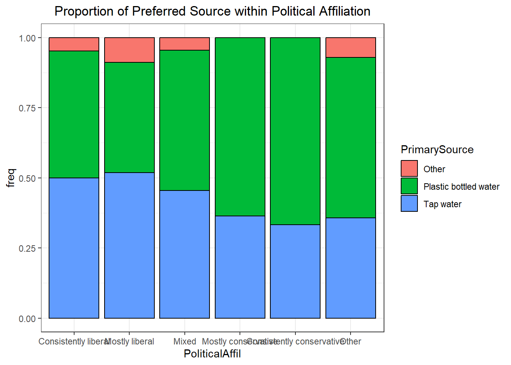

Preliminary Results
Gender data:
Relative proportion of preferred water source within each gender category.
This is just a table of what the above barplot shows, I’m just putting it in because trying to put the counts on the plot was difficult:
| Gender | PrimarySource | n | freq |
|---|---|---|---|
| Man | Other | 4 | 0.0449438 |
| Man | Plastic bottled water | 38 | 0.4269663 |
| Man | Prefer not to answer | 1 | 0.0112360 |
| Man | Tap water | 46 | 0.5168539 |
| Non-binary | Plastic bottled water | 5 | 0.5555556 |
| Non-binary | Tap water | 4 | 0.4444444 |
| Other | Other | 3 | 0.3333333 |
| Other | Plastic bottled water | 2 | 0.2222222 |
| Other | Tap water | 4 | 0.4444444 |
| Woman | I don't drink water | 1 | 0.0072993 |
| Woman | Other | 8 | 0.0583942 |
| Woman | Plastic bottled water | 68 | 0.4963504 |
| Woman | Prefer not to answer | 1 | 0.0072993 |
| Woman | Tap water | 59 | 0.4306569 |
Age:
Table showing breakdown of frequency plot:
| SchoolYear | PrimarySource | n | freq |
|---|---|---|---|
| Freshman | Other | 4 | 0.0615385 |
| Freshman | Plastic bottled water | 37 | 0.5692308 |
| Freshman | Tap water | 24 | 0.3692308 |
| Sophomore | Other | 4 | 0.0888889 |
| Sophomore | Plastic bottled water | 27 | 0.6000000 |
| Sophomore | Tap water | 14 | 0.3111111 |
| Junior | Other | 3 | 0.0681818 |
| Junior | Plastic bottled water | 20 | 0.4545455 |
| Junior | Tap water | 21 | 0.4772727 |
| Senior | Other | 2 | 0.0465116 |
| Senior | Plastic bottled water | 19 | 0.4418605 |
| Senior | Tap water | 22 | 0.5116279 |
| Master | Other | 1 | 0.0434783 |
| Master | Plastic bottled water | 4 | 0.1739130 |
| Master | Tap water | 18 | 0.7826087 |
| PhD | Plastic bottled water | 6 | 0.4000000 |
| PhD | Tap water | 9 | 0.6000000 |
Political Affiliation:

Table showing breakdown of frequency plot:
| PoliticalAffil | PrimarySource | n | freq |
|---|---|---|---|
| Consistently liberal | Other | 2 | 0.0476190 |
| Consistently liberal | Plastic bottled water | 19 | 0.4523810 |
| Consistently liberal | Tap water | 21 | 0.5000000 |
| Mostly liberal | Other | 7 | 0.0886076 |
| Mostly liberal | Plastic bottled water | 31 | 0.3924051 |
| Mostly liberal | Tap water | 41 | 0.5189873 |
| Mixed | Other | 2 | 0.0454545 |
| Mixed | Plastic bottled water | 22 | 0.5000000 |
| Mixed | Tap water | 20 | 0.4545455 |
| Mostly conservative | Plastic bottled water | 7 | 0.6363636 |
| Mostly conservative | Tap water | 4 | 0.3636364 |
| Consistently conservative | Plastic bottled water | 4 | 0.6666667 |
| Consistently conservative | Tap water | 2 | 0.3333333 |
| Other | Other | 1 | 0.0714286 |
| Other | Plastic bottled water | 8 | 0.5714286 |
| Other | Tap water | 5 | 0.3571429 |
Rankings:
dat_rank <- dat %>%
pivot_longer(30:36,
names_to = "Question",
values_to = "Ranking")
dat_rank$Ranking <- as.numeric(dat_rank$Ranking)
ggplot(data = dat_rank,
mapping = aes(x = Ranking,
y = Question,
fill = Question)) +
geom_density_ridges(alpha = .5)Picking joint bandwidth of 0.589Warning: Removed 651 rows containing non-finite values
(`stat_density_ridges()`).